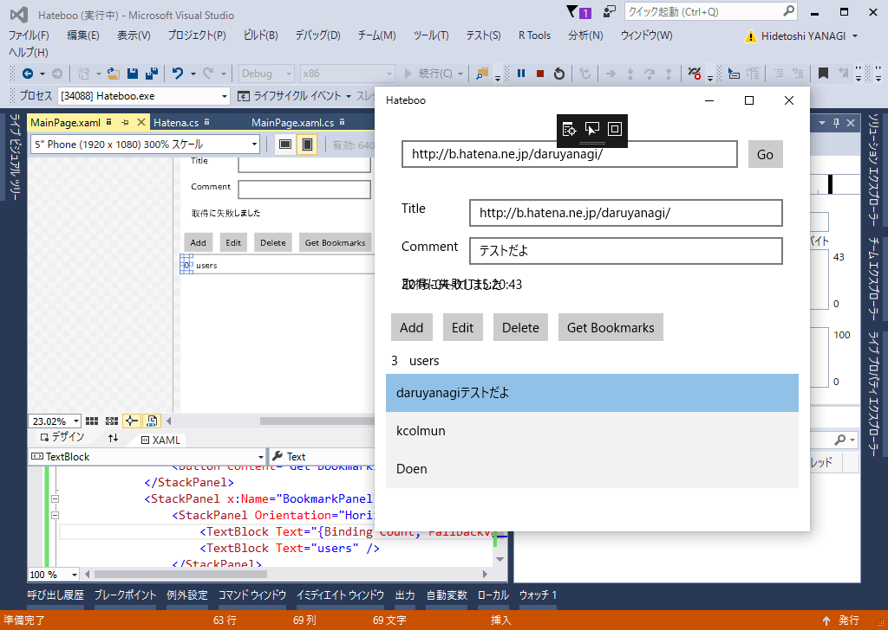

UWP：はてなブックマークアプリを作るときのメモ
公開日：

ググったら自分のブログが出てきて白目。
フォトライフの記事だったが、これをブックマーク向けにちょろっと編集するだけで動いた。ただし、
- パスワードによる WSSE 認証は終了 → API キーを代わりに利用する
- UA がセットされていないと 500 が返ってくる？ → 適当にセット
- はてながステータスコード100 continueをサポートしていない → 無効にする
といった手直しをする必要があったけれど。
たとえば、ブックマークの編集はこんな感じ
private const string API_ENDPOINT = "http://b.hatena.ne.jp/atom/"; private const string API_POST_URL = API_ENDPOINT + "post"; private const string API_EDIT_URL = API_ENDPOINT + "edit"; private const string USER_AGENT = "Hateboo"; private const string XML_ACCEPT_TYPE = "application/x.atom+xml, application/xml, text/xml, */*"; private const string XML_CONTENT_TYPE = "application/x.atom+xml"; private const string XML_PAYLOAD = "<entry xmlns=\"http://purl.org/atom/ns#\">" + "<title>{0}</title>" + "<link rel=\"related\" type=\"text/html\" href=\"{1}\" />" + "<summary type=\"text/plain\">{2}</summary>" + "</entry>";public async Task<PersonalBookmark> UpdatePersonalBookmarkAsync(string url, string title, string comment) { var endpoint = API_EDIT_URL + "?url=" + WebUtility.UrlEncode(url); var body = string.Format(XML_PAYLOAD, title, url, comment);
var request = new HttpRequestMessage(HttpMethod.Put, endpoint); request.Headers.Add("X-WSSE", GenerateWsseHeader()); request.Headers.Add("ContentType", XML_CONTENT_TYPE); request.Headers.Add("User-Agent", USER_AGENT); //！ request.Content = new StringContent( body, Encoding.UTF8, XML_CONTENT_TYPE);
using (var client = new HttpClient()) { client.DefaultRequestHeaders.ExpectContinue = false; //！
try { var response = await client.SendAsync(request); var content = await response.Content.ReadAsStringAsync(); var entry = await GetPersonalBookmarkAsync(url);
return entry; // XML をクラスにデシリアライズしてポイ } catch { return new PersonalBookmark(); // 空インスタンスをポイ } } }
ほんとは WSSE ではなく OAuth＋WebAuthenticator を使いたかったのだけど、うまく動かせなかったのでそれはまた今度。